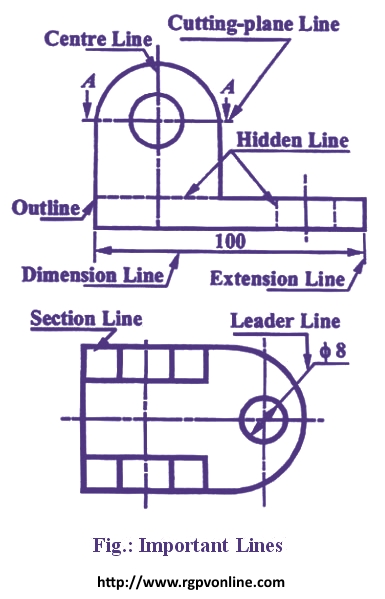

Que . 14 : Draw the following lines used in projection.
i) Extension line
ii) Leader line
iii) Construction line
निम्नलिखित लाइनों को खींचे -
Answer : Various types of lines as used in drawing of an object are shown in Figure and discussed below –
(i) Outlines – These are continuous thick lines. They are drawn to represent visible edges and surface boundaries of objects.
(ii) Dimension Lines – These are thin continuous lines. They are terminated by arrowheads touching the outlines, extension lines or centre lines.
(iii) Extension Lines – An extension line is also a thin continuous line drawn in extension of an outline. It extends by about 3 mm beyond the dimension line.
(iv) Construction Lines – These are continuous thin lines. They are drawn for constructing figures. They are shown in geometrical drawings only.
(v) Hatching or Section Lines – These are continuous thin lines and generally drawn at an angle of 45° to the main outline of the section. They are uniformly spaced about 1 mm to 2 mm apart. These lines are drawn to make the section evident.
(vi) Leader Lines – A leader or a pointer is a thin continuous line connecting a note or a dimension figure with the feature to which it applies. One end of the leader terminates either in an arrowhead or a dot. The arrowhead touches the outline, while the dot is placed within the outline of the Outline object. The other end of the leader is terminated in a horizontal line at the bottom level of the first or the last letter of the note. The leader is never drawn vertical or horizontal or curved. It is drawn at a convenient angle of not less than 30° to the line to which it touches. When pointing to a circle or an arc it is drawn radially. Use of common leaders for more than one feature should never be made.

(vii) Hidden Lines – These are medium thick lines made up of short dashes of approximately equal lengths of about 2 mm spaced at equal distances of about 1 mm. They are also called dashed lines or dotted lines. They are used to represent inferior or hidden edges and surfaces of an object.
(viii) Centre Lines – These are thin, long, chain lines composed of alternately long and short dashes approximately 1 mm apart. Shorter dashes are about 1.5 mm long and longer dashes are about 9 to 12 mm. Centre lines are drawn to indicate the axes of cylindrical, conical or spherical objects and also to show the centres of circles and arcs. Centre lines should extend for a short distance beyond the outlines to which they refer.
(ix) Cutting-plane Lines - These are long, thin, chain lines, thick at ends only. They are used to show the location of a cutting plane.